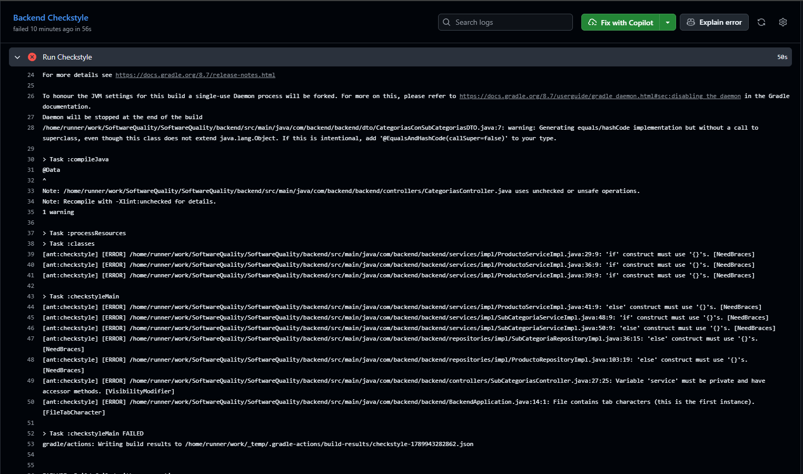
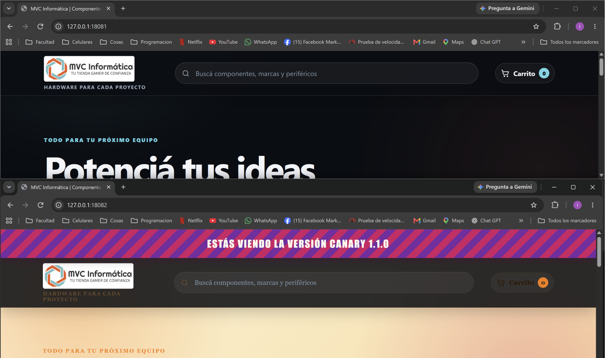
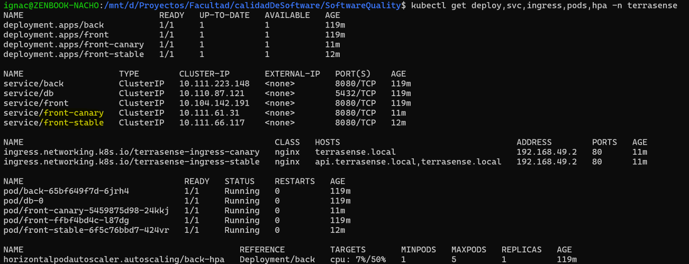
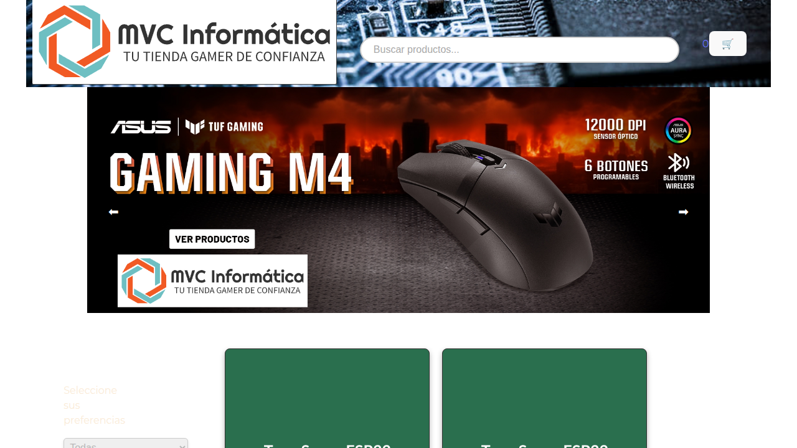

Del lint al Canary.
Resumen visual de todo el recorrido de calidad: controles estáticos, seguridad, SonarQube, pruebas, Kubernetes, HPA, carga, resiliencia y despliegue progresivo del frontend.
Un pipeline de calidad en cinco etapas
Arquitectura del TP Final
Host: terrasense.local
header / cookie
backend compartido
track: stable
track: canary · weight 0
CPU objetivo 50 %
datos de demo
Minikube
X-App-Version
TP1 — Linters y CI
Backend · Checkstyle 10.12.5
Integrado con Gradle y configurado con política estricta:
- Línea base: 10 errores en 6 archivos.
- Reglas de imports, nombres, visibilidad, llaves y formato.
- Resultado final: 0 violaciones.
Frontend · ESLint 8.57.0
Reglas de React y React Hooks aplicadas al frontend Vite.
- Línea base: 13 errores y 1 warning.
- Se corrigieron efectos, JSX, ciclo de vida del carrusel y claves React.
- Resultado final: 0 errores y 0 warnings.
Workflow de GitHub Actions
El workflow ejecutable corre dos jobs independientes en cada push y en Pull Requests hacia main o develop. Publica summaries y artefactos aunque falle el job.
- Backend: Java 17 + Gradle + Checkstyle.
- Frontend: Node 20 +
npm ci+ ESLint.
- No ejecuta SonarScanner.
- No ejecuta Horusec, tests completos, Docker ni Kubernetes.
TP2 — Horusec
13 findings
7 en backend y 6 en frontend.
2 HIGH · 11 INFO
Los casos se analizaron individualmente.
13 falsos positivos
Para los flujos concretos auditados.
Qué se decidió
- No contar alertas sin mirar el contexto.
- Revisar qué dato se imprime y quién puede acceder a los logs.
- No afirmar que “sin alertas” significa “sistema seguro”.
- Complementar SAST con dependencias, DAST, revisión y controles de autorización.
Canary 1.1.0
Horusec v2.8.0 devolvió status: success y un único INFO de confianza LOW:
console.error(error) en ItemDetailContainer.jsx:18. Es preexistente y no se afirma que esté corregido.TP3 — SonarQube y tests
SonarQube se configuró con el proyecto softwarequality-tp3 para analizar Java y React juntos. Se integraron resultados JUnit, JaCoCo y LCOV.
| Métrica | Inicial | Final |
|---|---|---|
| Issues | 55 | 25 |
| Bugs | 15 | 2 |
| Vulnerabilidades | 5 | 0 |
| Code smells | 35 | 23 |
| Cobertura global | 7,9 % | 33,1 % |
| Duplicación | 1,6 % | 1,1 % |
62 tests Java
Todos correctos en el snapshot histórico.
9 tests frontend
Suite Vitest agregada para componentes y lógica.
0 fallos reportados
La cobertura nueva alcanzó 94,9 %.
Correcciones importantes
- Restauración correcta de interrupciones.
- Eliminación de
printStackTrace. - Listas vacías en lugar de
null. - Validaciones duplicadas movidas al servicio.
- Estado inmutable del carrito y claves estables React.
- Tests vacíos y mocks duplicados corregidos.
Cómo explicar el Gate
El Gate se evalúa sobre código nuevo. Por eso puede quedar verde aunque la cobertura global sea 33,1 %.
El JSON no demuestra un Quality Gate personalizado ni un análisis ejecutado hoy sobre la rama actual.
TP4 — Kubernetes, HPA y k6
Lift & Shift
- React/NGINX.
- Spring Boot.
- PostgreSQL.
- Ingress NGINX.
- Metrics Server.
- HPA entre 1 y 5 réplicas.
Decisión de backend
Se agregó el perfil Spring k8s para usar PostgreSQL y JDBC sin romper el modo original con Firebase.
El backend publica probes de Actuator y usa variables de entorno inyectadas por Kubernetes.
Resultados k6
| Escenario | Carga | Resultado | Lectura |
|---|---|---|---|
| Smoke | 2 VUs | 0 % errores · p95 2,01 s | Disponible, pero lento por cold start y datos acumulados. |
| Load | 2.000 VUs | 98,10 % errores · p95 12,32 s | HPA 1 → 5, pero PostgreSQL se saturó. |
| Stress | 200–1.000 VUs | 99,80 % errores · p95 5 s | Breaking point desde el primer escalón. |
| Failover | Eliminar un Pod | 574/574 correctas · LCP 476 ms | Resiliencia correcta con réplicas activas. |
| Spike | 1.500 VUs en 5 s | 100 % errores | CPU throttling, liveness y Exit 143. |
Lección de TP4
Escalar el backend no alcanza si la dependencia compartida está saturada. El diagnóstico principal fue el uso de DriverManagerDataSource sin pool, junto con la base PostgreSQL compartida y la inercia del HPA.
TP Final — Stable vs. Canary
1.0.0
Versión de referencia para tráfico normal.
front-stable1.1.0
Nueva versión visual, observable y forzable.
front-canary0 → 10 → 25 → 50 → 100
La secuencia está definida, pero las métricas finales no aparecen guardadas.
Pendiente de evidenciaCómo se identifica la versión
/version.txt.- Header
X-App-Version. - Meta
app-version. - Banner visual:
ESTÁS VIENDO LA VERSIÓN CANARY 1.1.0.
Cómo se fuerza Canary
curl -H 'Host: terrasense.local' \ -H 'X-Canary: always' \ http://127.0.0.1:18080/version.txt
curl -H 'Host: terrasense.local' \ -H 'Cookie: canary=always' \ http://127.0.0.1:18080/version.txt
Orden reproducible de despliegue
minikube start --driver=docker minikube addons enable ingress minikube addons enable metrics-server # Si existe el Ingress legado del TP4: kubectl delete ingress terrasense-ingress -n terrasense --ignore-not-found kubectl apply -f TPs/TP-Final/k8s/base/ kubectl apply -f TPs/TP-Final/k8s/stable/ kubectl apply -f TPs/TP-Final/k8s/canary/
nginx.ingress.kubernetes.io/canary-weight a "0" y reaplicar el manifiesto Canary.Evidencias disponibles en el repositorio






Confirmado
- Versiones Stable/Canary.
- Pods saludables.
- Routing normal y forzado.
- Horusec del frontend.
- Videos y capturas existentes.
Documentado
- Plan de rollout.
- Criterios de promoción.
- Rollback a peso 0.
- Hipótesis de stress test.
No encontrado
- Métricas por etapa 10/25/50 %.
- Comparativa k6 del TP Final.
- Grilla de 20 capturas.
- Video específico de rollout.
- PDF final y diapositivas.
Decisiones y motivos
| Decisión | Motivo | Beneficio |
|---|---|---|
| Canary solo frontend | El experimento se concentra en el rediseño visual. | Menos complejidad y menor riesgo. |
| Tags 1.0.0 / 1.1.0 | Evitar imágenes ambiguas como latest. | Reproducibilidad y rollback. |
| Versionado observable | El routing debe poder comprobarse desde máquina y usuario. | Meta, endpoint, header y banner. |
| Peso inicial 0 | No exponer usuarios normales antes del smoke test. | Prueba segura por header/cookie. |
| Selectors track | Separar Pods Stable y Canary. | Evita que un Service mezcle versiones. |
| Recursos iguales | Comparar variantes bajo condiciones equivalentes. | Menos sesgo en las mediciones. |
| Perfil Spring k8s | Ejecutar localmente con PostgreSQL sin romper Firebase. | Despliegue autónomo en Minikube. |
| Rollback a 0 | Fail-safe ante errores o regresión. | Regreso rápido a Stable. |
Go / No-Go
Canary 1.1.0 · GO parcial
Está listo para iniciar exposición controlada porque:
- ESLint quedó en 0.
- Tests y calidad interna documentados.
- Horusec no encontró HIGH/CRITICAL.
- La versión está desplegada y observable.
- Existe rollback por peso.
GO final al 100 %: condicionado a tener métricas del rollout y comparativa bajo carga.
10.000 sensores · NO-GO
La evidencia de TP4 muestra errores graves por debajo del volumen objetivo:
- 98,10 % de errores en Load Test.
- 99,80 % en Stress Test.
- 100 % en Spike Test.
- Sin pool JDBC.
- Base de datos compartida y HPA reactivo.
Remediación propuesta: HikariCP, paginación, más Pods mínimos y cola de ingesta.
Preguntas probables de la presentación
¿Por qué no usar latest?
Porque no permite saber exactamente qué build está ejecutándose. Los tags explícitos hacen reproducibles la comparación y el rollback.
¿Cómo sabemos qué versión respondió?
Con /version.txt, el header X-App-Version, la meta HTML y el banner visual del Canary.
¿El Gate verde significa calidad total?
No. El Gate histórico evalúa principalmente código nuevo. La cobertura global sigue siendo 33,1 %.
¿Por qué el HPA no solucionó la carga?
Porque escaló el backend, pero la base y las conexiones JDBC siguieron siendo un cuello de botella compartido.
¿Horusec dio cero?
No exactamente. Quedó un INFO de confianza LOW, preexistente. No hubo CRITICAL, HIGH, MEDIUM ni LOW.
¿Se completó el rollout 0 → 100?
Está definido y documentado, pero no hay métricas por etapa en el checkout. No conviene afirmarlo como terminado.
Demo corta en WSL
kubectl get deploy,svc,ingress,pods,hpa -n terrasense kubectl port-forward -n ingress-nginx svc/ingress-nginx-controller 18080:80 # En otra terminal: curl -fsS -H 'Host: terrasense.local' http://127.0.0.1:18080/version.txt curl -fsS -H 'Host: terrasense.local' -H 'X-Canary: always' http://127.0.0.1:18080/version.txt curl -fsS -H 'Host: terrasense.local' -H 'Cookie: canary=always' http://127.0.0.1:18080/version.txt